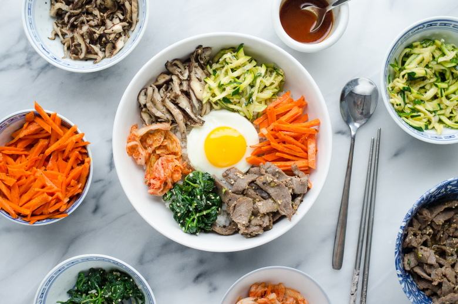
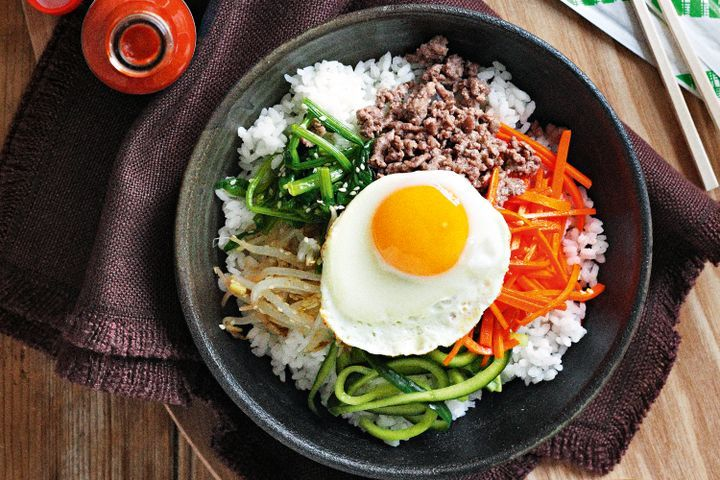
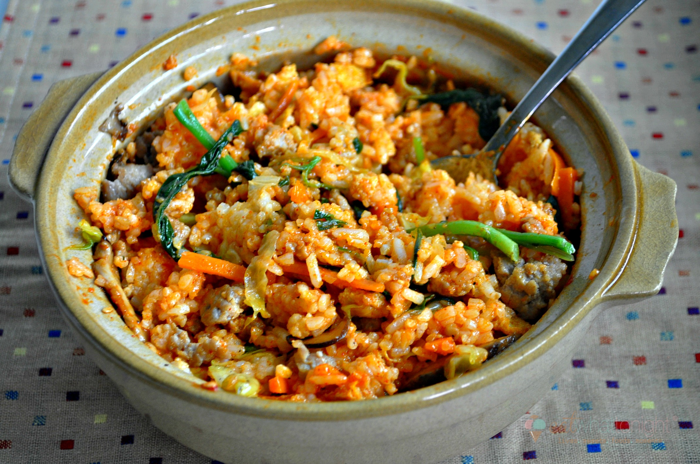

 BIBIMBAP
Ingredientai:
- Virti ryžiai (korėjiečiai pateikia lipnius, sušiams gaminti skirtus ryžius)
- Dėžutė sojų daigų
- 2 didelės saujos šparaginių pupelių, supjaustytų į 4-5 cm gabaliukus
- 2 mažos cukinijos
- 1 baklažanas
- 4-6 šitake grybai (išmirkyti iki minkštumo)
- 200 gramų maltos jautieinos
- 1 morka
- 4 kiaušiniai
- sojos padažas, česnakai (6 skiltelės), sezamų aliejus, augalinis aliejus kepimui
- Aštrus pomidorų padažas (pateikimui)
Paruošimas
- Išverdame ryžius ir juos laikome šiltai.
- Pasiruošiame didelę lėkštę, į kurią dėsime visus paruoštus bibimbapo ingredientus.
- Puode užverdame puodelį vandens su 1 šaukšteliu druskos. Sudedame į verdantį vandenį sojų daigus ir verdame 20 minučių. Nupilame vandenį, nusausiname. Sumaišome su 1 susmulkinta česnako skiltele, trupučiu sezamų aliejaus ir žiupsneliu druskos. Dedame į paruoštą lėkštę.
- Užverdame puode vandenį su šaukšteliu druskos. Suberiame į verdantį vandenį šparagines pupeles ir verdame porą minučių, kol pupelės šiek tiek suminkštės. Nupilame vandenį, perliejame šaltu vandeniu, nusausiname. Sumaišome pupeles su 1 šaukšteliu sojų padažo, viena susmulkinta česnako skiltele irtrupučiu sezamų aliejaus. Dedame į paruoštą lėkštę.
- Supjaustome cukinijas plonais pagaliukais. Pabarstome trupučiu druskos, ir paliekame kelioms minutėms pastovėti. Tada nusausiname išsiskyrusias sultis. Didelėje keptuvėje įkaitiname šlakelį augalinio aliejaus ir labai karštame aliejuje apkepiname cukinijas minutę. Sudedame cukinijas į paruoštą lėkštę.
- Supjaustome baklažanus plonais pagaliukais. Įkaitiname keptuvėje šlakelį aliejaus ir jame minutę pakepiname baklažanus, Tada įpilame 1 šaukštą sojų padažo ir pusę šaukšto rudojo cukraus. Maišydami kepiname, kol baklažanai suminkštėja ir karamelizuojasi (1-2 min.). Pabaigoje pažlakstome sezamų aliejumi ir dedame į paruoštą lėkštę.
- Supjaustome išmirkintus šitake grybus plonomis juostelėmis. Keptuvėje įkaitiname šaukštą aliejaus ir jame kepiname grybus minutę. Įpilame 2 šaukštelius sojos padažo ir 1-2 šaukštelius rudijo cukraus ir pakepiname dar 2 minutes. Pabaigoje pašlakstome trupučiu sezamų aliejaus ir dedame į paruoštą lėkštę.
- Įpilame į įkaitintą keptuvę truputį aliejaus, sudedame maltą jautieną. Viską maišydami pakepiname, kol jautiena pradeda keisti spalvą. Sudedame sukapotas smulkiai 4 česnako skitleles ir dar minutę pakepiname maišant. Tada supilame 1 šaukštą sojos padažo ir 1/2 šaukšto cukraus, truputį maltų juodųjų pipirų, ir šiek tiek sezamų aliejaus. Viską maišom ir kepam, kol mėsa pasidaro trapi, iškepusi. Sudedame į paruoštą lėkštę.
- Supjautsome morkas plonais šiaudeliais ir kepiname įkaitusioje keptuvėje su trupučiu aliejaus pusę minutės, kol vos vos suminkštėja, ir dedame į paruoštą lėkštę.
- Iškepame kiaušinius, neapversdami.
- Pateikiame bibimbap su virtais ryžiais. Kiekvienas įsideda į dubens apačią ryžių, ant viršaus – gamą paruoštų daržovių, o pačiame viršuje užsideda keptą kiaušinį. Viską pasišlakstom aštriu pomidorų padažu ir sezamų aliejumi.
Prieš valgant- susimaišykite.
|  |
 |
 |